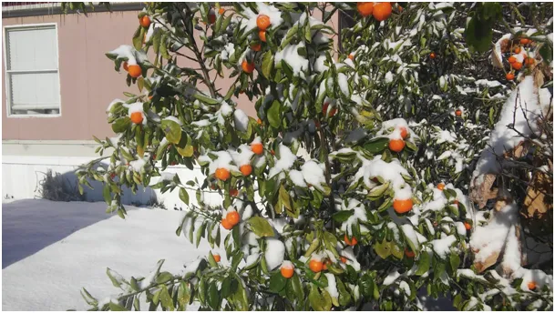
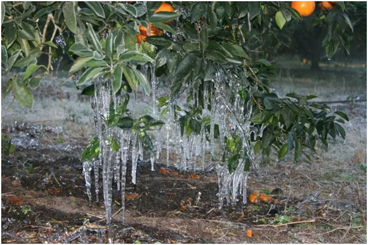
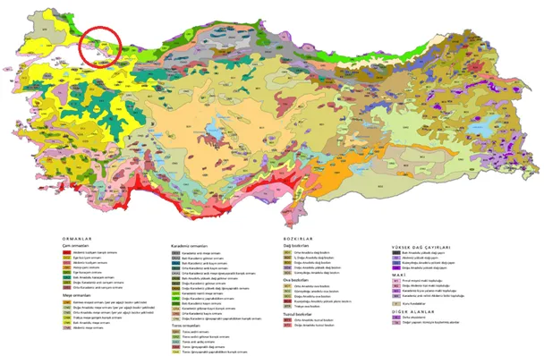
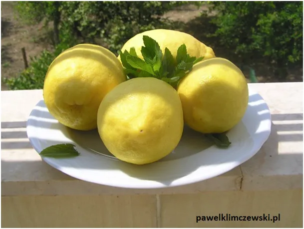
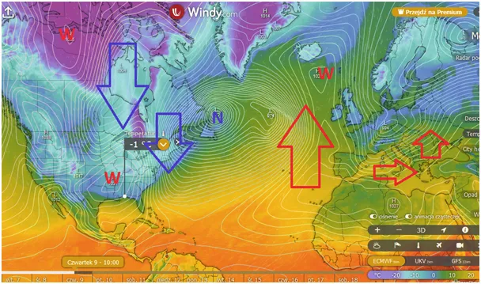

To rośliny, nie politycy, mówią nam, jaki mamy klimat.
Nie są nowością cytrusy w śniegu. Plantacje owoców południowych sięgają północnych granic ich naturalnego występowania. W USA są to obszary nadmorskie Florydy i Kalifornii, gdzie łagodny klimat sprzyja tym gatunkom. Gdyby te drzewka nie zostały posadzone ręką człowieka nigdy by nie wyrosły tak bardzo. Granice klimatów są dość stałe, ale zawsze są narażone na anomalię, gdy raz na wiele lat zimne powietrze z północy dociera daleko na południe i niszczy wszystkie gatunki nieodporne na mróz. W naturze prawdziwą granicą gatunków są te granice ekstremalne, gdzie mróz nie dociera nigdy. Roślina zasiana naturalnie wiele lat musi wschodzić zanim zaowocuje i z jej nasion w pobliżu wyrosną nowe drzewa.

Człowiek na teren objęty ryzykiem mrozu przywozi wyrośnięte sadzonki i przez wiele lat zbiera owoce swej pracy, zbiera do pierwszej anomalii.

W naszej okolicy takim miejscem granicznym są cieśniny Bosfor i Dardanele w Turcji, oddzielające Azję od Europy. Bosfor to samo centrum dwudziestomilionowego Istambułu. Na południe od tego miejsca spotkamy w ogrodach drzewa cytrynowe, na północ od miasta ludzie chętnie hodują te owoce, ale w donicach, na zimę trzeba schować je przed chłodem do domu.

Klimat na Ziemi od tysięcy lat jest wyjątkowo stabilny, zmiany terenów upraw danych gatunków notowany był na przestrzeniach setek lat, a pojawianie się na północy roślin południowych dziś to skutek genetycznego tworzenia odmian mrozoodpornych. Jeśli klimat się będzie zmieniał to pierwsze powiedzą nam o tym rośliny przesuwając swe granice naturalnego występowania.

Wielki niż ściąga na USA północne powietrze i już za kilka dni dowiemy się jak ono daleko zaszło. Prognozowane są przymrozki w okolicach Nowego Orleanu i na północnej Florydzie. Będziemy się przyglądać jak postępuje "globalne ocieplenie" w USA w tym tygodniu. Póki co już od początku stycznia Amerykanie walczą ze śnieżycami. Donald Trump ma bardzo sprzyjające warunki, aby otrzeźwić zaczadzonych CO2 Amerykanów na początku swej kadencji.
Paweł Klimczewski